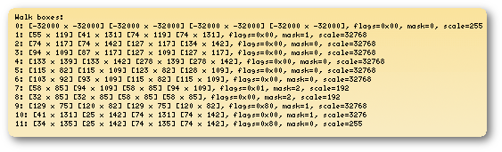
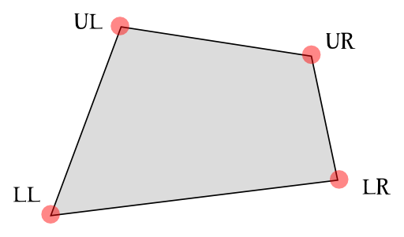
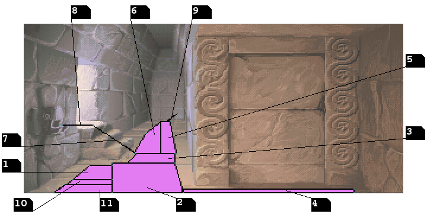
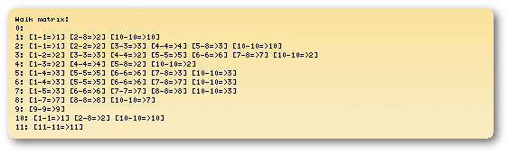

The Dijkstra algorithm is named after its discoverer, the mathematician Edsger Dijkstra and, despite the algorithm was originally designed to solve the shortest path problem (a particular problem in mathematical graph theory), it was later used in videogames.
Dijkstra is also famous for his 1968 well-known article "GOTO statement considered harmful"[3] where he fought against the so called spaghetti code, low quality programs which were difficult to read or modify because of the extreme use of GOTO statement.
ScummVM doesn't using anything complicated like A* at all!Fingolfin essentially says that the walkable area of a room is subdivided into a series of quadrilateral non-overlapping areas called boxes.
Rather, the game screen is divided into so-called "boxes" (which in the later SCUMM versions could essentially be almost arbitrary non-overlapping quadrangles).
Normally, an "actor" (like e.g. Guybrush in Monkey Island) is confined to movement within those boxes. So at any time, an actor has a "current box" attribute assigned to it. Let's assume the actor is in box 1.
When the user clicks somewhere, the engine first determines which box the click was in. If it's the same as the actor to be moved is in anyway, it can just be walked there. That's easy. Now assume the click was in a different box, e.g. box 5. Then the engine first determines how to get to that box.
For this, it looks in the "box matrix", which is essentially a precomputed n*n matrix, where n is the total number of boxes in the room. For each pair (i,j) of boxes, it contains a value k which says: "If you are in box i and want to get to get to box j, first go to box k". Note that "k" could equal j if box i and j are adjacent.
Now, equipped with this value, the engine will first compute a path for the actor to walk from its current position to the new box k. This depends on how the boxes i and k "touch".
Anyway, so the actor walks a bit and reaches box k. If this was the same as the box of our final destination, then we just walk to the final destination, and are done. If not, we rince and repeat: Look up the entry (k,j) in the box matrix to find the next box; walk to that; etc...
n x n elements, where n is the total number of boxes inside the room.i and j, the matrix contains a value k which means "If you are in box i now and you want to reach box j, you must go to box k first!"k and this box doesn't correspond to the desired final destination, this process will repeat. On the other hand, when k == j (i.e. boxes i and j are adjacent), the actor is arrived and no more calculation are needed.
CTRL + D keys combination.
The ScummVM debugger offers 2 different commands in order to show and examine the information we talked about. Here they are:
boxcommand;matrix command;box command shows a schematic report about the current room boxes, let's try to insert it at the debugger prompt and see what happens:

The 12 rows of text output, one for each of the boxes, show information about their geometry and more. Let's put aside for the moment the row/box number 0 (it is used as a sort of walk-matrix header and doesn't contain useful information really), and take a look at the other rows; here we see numerical values corresponding to| Upper Left Coords | Lower Left Coords | Upper Right Coords | Lower Right Coords | Mask | Flags | Scale |
mask, flags and scale values we will cover in details in future posts. Now let's concentrate to the first 4 pairs of coordinates.

Each of these pair represents one of the 4 box vertices, expressed in pixels. In order we have the upper left vertex first and then the lower left one and so on with the upper and lower right vertices.
Tracing vertices and lines on the room background image we obtain a visual representation of the walkable area, very useful for our study.

From the image we note indeed an interesting fact: some of these boxes may show up differently than a quadrilateral and solve as a simple segment as it happens for box 7, 8, and 9!
matrix command instead an see what the debugger shows up:

These values are quite criptical to interpret but fortunately the ScummVM wiki[5][6] comes in handy. From here we read that the matrix has a line for each box, and for each one it lists a triad of values for each adjacent box to the one we are considering.start and end values) of boxes which, in order to be reached, they force the actor to visit another box, which is the one represented by the third value.4: the first triad is represented like this [1-3=>2] which means that if the actor current box is 4 and he is asked to go to box 1 through 3, he must first visit the second box. Now the second triad [4-4=>4] is easier to understand, if we already are on box 4 and the player click is still on this box, we should remain here!| 1 | 2 | 3 | 4 | 5 | 6 | 7 | 8 | 9 | 10 | 11 | |
|---|---|---|---|---|---|---|---|---|---|---|---|
| 1 | 1 | 2 | 2 | 2 | 2 | 2 | 2 | 2 | // | 10 | // |
| 2 | 1 | 2 | 3 | 4 | 3 | 3 | 3 | 3 | // | 10 | // |
| 3 | 2 | 2 | 3 | 2 | 5 | 6 | 7 | 7 | // | 2 | // |
| 4 | 2 | 2 | 2 | 4 | 2 | 2 | 2 | 2 | // | 2 | // |
| 5 | 3 | 3 | 3 | 3 | 5 | 6 | 3 | 3 | // | 3 | // |
| 6 | 3 | 3 | 3 | 3 | 5 | 6 | 7 | 7 | // | 3 | // |
| 7 | 3 | 3 | 3 | 3 | 3 | 6 | 7 | 8 | // | 3 | // |
| 8 | 7 | 7 | 7 | 7 | 7 | 7 | 7 | 8 | // | 7 | // |
| 9 | // | // | // | // | // | // | // | // | 9 | // | // |
| 10 | 1 | 2 | 2 | 2 | 2 | 2 | 2 | 2 | // | 10 | // |
| 11 | // | // | // | // | // | // | // | // | // | // | 11 |